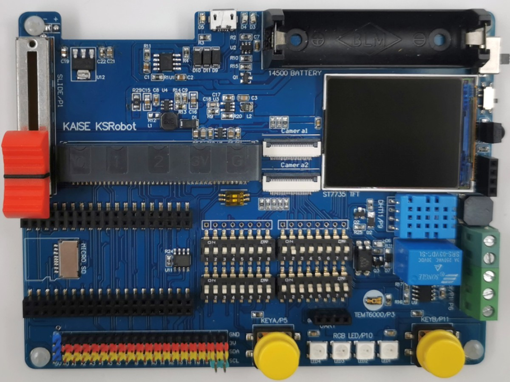
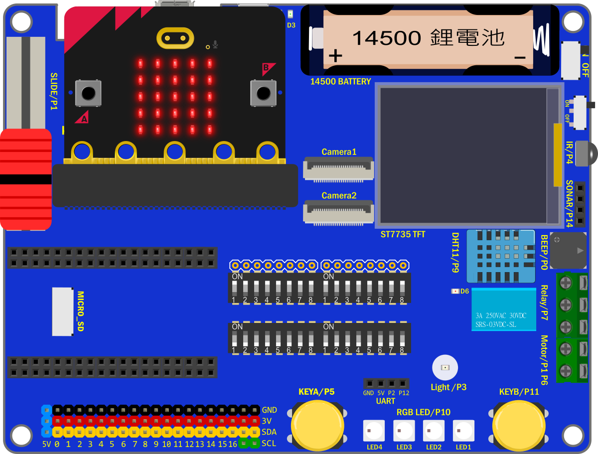
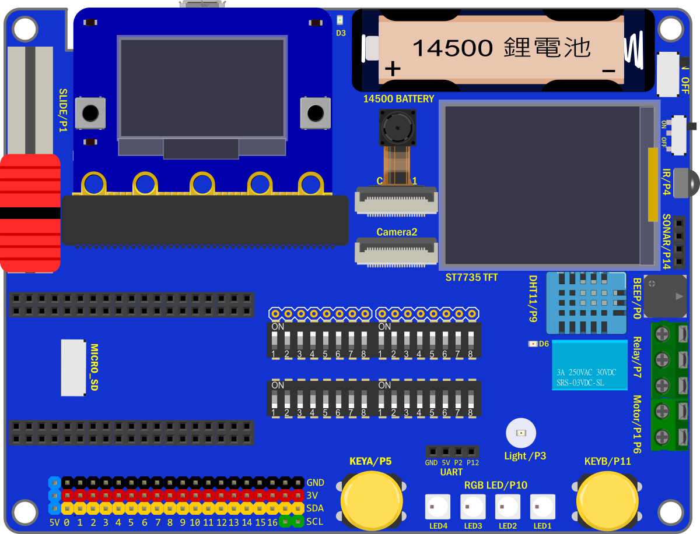
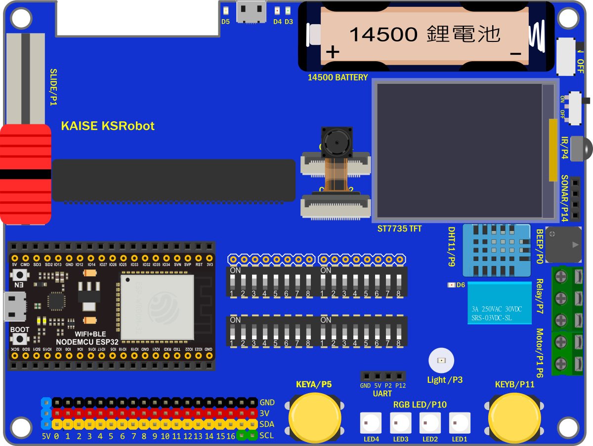
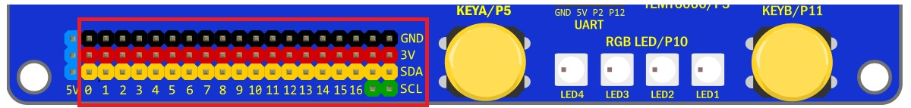
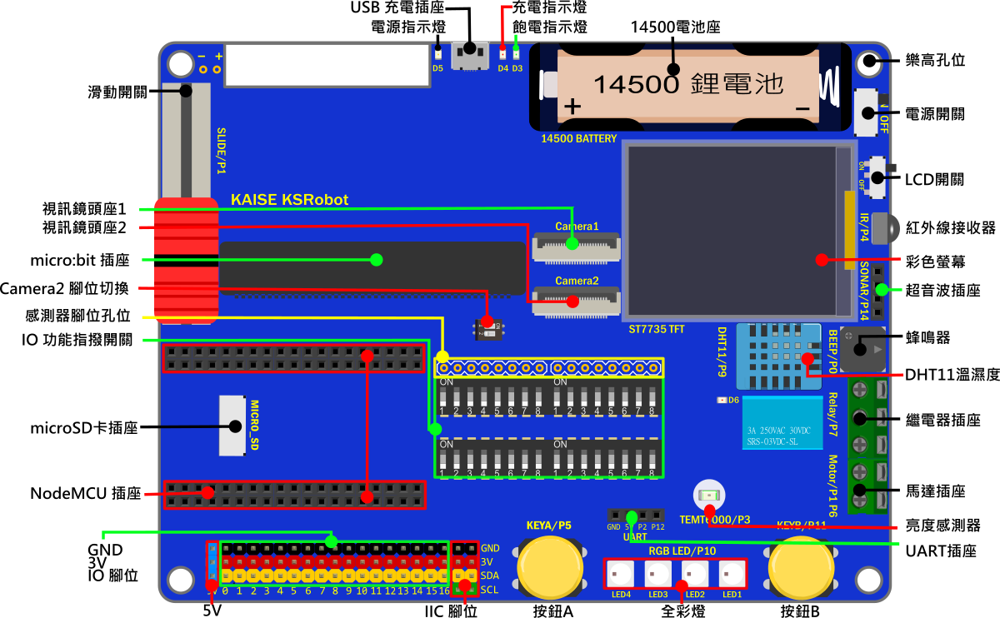

KSB065 Home Automation Board 家庭自動化擴展板
簡介


KSB065 Home Automation Board 家庭自動化擴展板 簡稱 KSB065 家控板， 可以連接 micro:bit、PocketCard 、 NodeMCU-32S ESP32 等開發板，使用彩色TFT 螢幕且引出了全部IO腳位，並提供了多種感測器且使用14500鋰電池供電以達到離線應用。
產品規格
| KSB065 Home Automation Board | |
|---|---|
| Panel(全彩螢幕) | 1.8 TFT Panel(160x128) |
| TEMT6000(光度) | Light sensors x1 |
| Relay(繼電器) | Relay x1 |
| DHT11(溫濕度) | DHT11 x1 |
| Motor(馬達控制) | Motor x1 Channel |
| Slide(滑桿) | Slide x1 |
| Buzzer(蜂鳴器 ) | Buzzer x1 |
| IR(紅外接收元件) | IR x1 |
| RGB LED(全彩燈) | Ws2812b x4 |
| Button(按鈕) | Programmable buttons x2 |
| micro SD Socket(micro SD插座) | micro SD Socke x1 |
| Switch(指撥開關) | 8 bit Switch x4 |
| PSRAM(虛擬靜態隨機存取記憶體) | PSRAM 8192 KB for ESP32 |
| micro USB Socket(micro USB插座) | For charging and power supply（充電和供電用） |
| 14500 Battery Socket(14500 電池座) | 14500 Battery Socke x1 |
| IO interface(排針插座) | P0~P16(SVG)，IIC Socket x2，UART Socket，Sonar Socket |
| Lego positioning hole(樂高孔位) | Lego positioning hole |
| Size | 13.6x10.4cm |
感測器IO 對應表格
NodeMCU-32S 和 PocketCard ESP32 使用的感測器腳位一樣
| Sensor 感測器 | micro:bit IO | ESP32 IO |
|---|---|---|
| Buzzer(蜂鳴器 ) | P0 | IO26 |
| Slide(滑桿) | P1 | IO33 |
| IR(紅外接收元件) | P3 | IO35 |
| TEMT6000(光度) | P4 | IO4 |
| ButtonA(按鈕A) | P5 | IO14 |
| Motor(馬達控制) | P6 | IO16 |
| Motor(馬達控制) | P1 | IO33 |
| Relay(繼電器) | P7 | IO17 |
| DHT11(溫濕度) | P9 | IO13 |
| RGB LED(全彩燈) | P10 | IO2 |
| ButtonB(按鈕B) | P11 | IO35 |
| UART Rx | P2 | IO35 |
| UART Tx | P12 | IO35 |
| Sonar(超音波插座) | P14 | IO19 |
| ST7735彩屏(SCK) | P13 | IO18 |
| ST7735彩屏(MOSI) | P15 | IO23 |
| ST7735彩屏(DC) | P8 | IO27 |
| ST7735彩屏(CS) | P16 | IO5 |
| ST7735彩屏(RST) | 3V | 3V |
| SD(SCK) | P13 | IO18 |
| SD(MOSI) | P15 | IO23 |
| SD(MISO) | P14 | IO19 |
| SD(CS) | P4 | IO4 |
PS
Slide(滑桿) 和 Motor(馬達控制) 的 IO腳位P1重複，功能2擇1
TEMT6000(光度) 和 SD 的 IO腳位P4重複，功能2擇1
Sonar(超音波插座) 和 SD 的 IO腳位P14重複，功能2擇1
排針腳位 對應表格

NodeMCU-32S 和 PocketCard ESP32 對應排針腳位一樣
PS：全部IO 都已經被板子上的感測器使用完畢，要用排針腳位另接模組，需用指撥開關關掉相對應的感測器IO
| PCB標示 | micro:bit | ESP32 | 備註 |
|---|---|---|---|
| 0 | P0 | IO26 | 蜂鳴器 |
| 1 | P1 | IO33 | 滑桿 或 馬達控制 |
| 2 | P2 | IO32 | UART 插座Rx |
| 3 | P3 | IO35 | 紅外接收元件 |
| 4 | P4 | IO4 | 光度感測器 或 SD(CS) |
| 5 | P5 | IO14 | 按鈕A |
| 6 | P6 | IO16 | 馬達控制 |
| 7 | P7 | IO17 | 繼電器 |
| 8 | P8 | IO27 | ST7735彩屏(DC) |
| 9 | P9 | IO13 | DHT11 |
| 10 | P10 | IO2 | 全彩燈 |
| 11 | P11 | IO25 | 按鈕B用 |
| 12 | P12 | IO15 | UART 插座Tx |
| 13 | P13 | IO18 | ST7735彩屏(SCK) 和 SD(SCK) |
| 14 | P14 | IO19 | SD(MISO) 或 Sonar(超音波插座) |
| 15 | P15 | IO23 | ST7735彩屏(MOSI) 和 SD(MOSI) |
| 16 | P16 | IO5 | ST7735彩屏(CS) |
| SCL | P19 | IO22 | IIC用 |
| SDA | P20 | IO21 | IIC用 |
指撥開關腳位 對應表格

指撥開關往ON 的方向撥是 打開/ON，往下撥是 關閉/OFF
指撥開關1 標示 |
感測器 |
micro:bit |
PocketCard |
|---|---|---|---|
| 1 | 蜂鳴器 | P0 | IO26 |
| 2 | 滑桿 | P1 | IO33 |
| 3 | UART 插座Rx | P2 | IO32 |
| 4 | ST7735彩屏(DC) | P8 | IO27 |
| 5 | UART 插座Tx | P12 | IO15 |
| 6 | ST7735彩屏(SCK) 和 SD(SCK) | P13 | IO18 |
| 7 | ST7735彩屏(MOSI) 和 SD(MOSI) | P15 | IO23 |
| 8 | ST7735彩屏(CS) | P16 | IO5 |
如果需要使用micro:bit 5x5 LED屏，需要關閉 對應感測器的功能，指撥開關2 全部往下撥到OFF，
指撥開關2 標示 |
感測器 |
micro:bit |
PocketCard |
|---|---|---|---|
| 1 | 馬達控制 | P1 | IO33 |
| 2 | 光度感測器 | P4 | IO4 |
| 3 | 紅外接收元件 | P3 | IO35 |
| 4 | 繼電器 | P7 | IO17 |
| 5 | DHT11 | P9 | IO13 |
| 6 | 全彩燈 | P10 | IO2 |
| 7 | 馬達控制 | P6 | IO16 |
| 8 | SD(MISO) | P14 | IO19 |
指撥開關3和指撥開關4 是NodeMCU-32S 專用指撥開關，是用來連接 NodeMCU-32S 和感測器的腳位，
使用micro:bit 和PocketCard 不用理會。
指撥開關3 標示 |
感測器 |
NodeMCU-32S |
|---|---|---|
| 1 | 蜂鳴器 | IO26 |
| 2 | 滑桿 | IO33 |
| 3 | UART 插座Rx | IO32 |
| 4 | ST7735彩屏(DC) | IO27 |
| 5 | UART 插座Tx | IO15 |
| 6 | ST7735彩屏(SCK) 和 SD(SCK) | IO18 |
| 7 | ST7735彩屏(MOSI) 和 SD(MOSI) | IO23 |
| 8 | ST7735彩屏(CS) | IO5 |
指撥開關4 標示 |
感測器 |
NodeMCU-32S |
|---|---|---|
| 1 | ||
| 2 | 光度感測器 | IO4 |
| 3 | 紅外接收元件 | IO35 |
| 4 | 繼電器 | IO17 |
| 5 | DHT11 | IO13 |
| 6 | 全彩燈 | IO2 |
| 7 | 馬達控制 | IO16 |
| 8 | SD(MISO) | IO19 |
功能說明

板載鋰電池保護IC，鋰電池首次裝上時，請先插上USB線上電，否則會有不供電狀況
電源開關：僅對鋰電池和擴展板的USB供電有開關作用
電源：使用板載鋰電池供電，插USB線 到擴展板的USB座 可充電和供電
充電過程燈號顯示如下
| 燈號 | 作用 |
|---|---|
| 紅燈(充電指示燈)亮，綠燈(飽電指示燈)滅 | 充電中 |
| 紅燈滅，綠燈亮 | 充飽電 |
| 紅燈滅，綠燈滅 | 鋰電池擴展板有問題，請先排除故障原因 |
| 紅燈閃滅，綠燈亮 | 鋰電池沒有插上 |